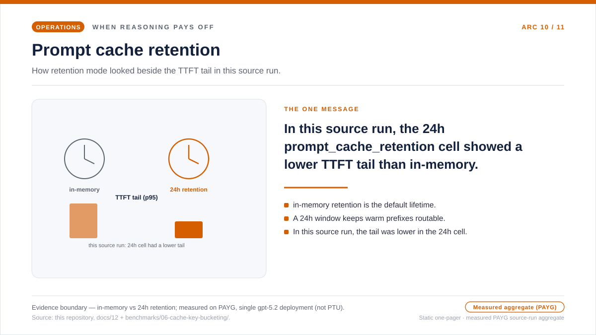
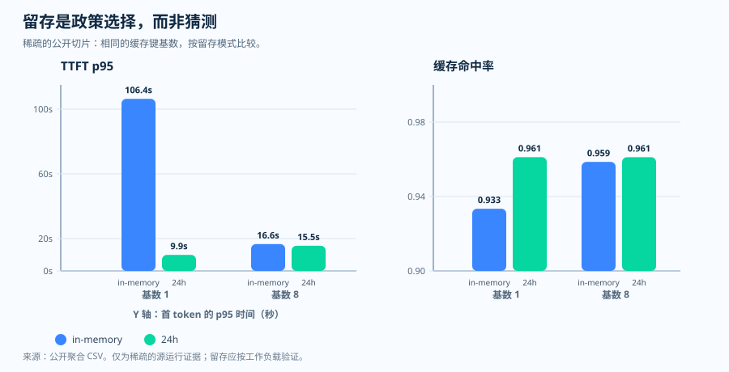

运维随笔 · 提示缓存留存
留存是一项请求策略，而不是一个默认前提
因为支持的模型会默认缓存符合条件的前缀，提示缓存让人感觉是自动生效的。所以
人们很想靠在它上面——工作负载会在空闲间隙之后、跨越班次边界、在批处理暂停
之后，或在后续的客户回合里复用共享前缀，而请求体只是省略了
prompt_cache_retention，相信那个窗口还在那儿。可"默认会被缓存"并不
等于"会保留到运维所假定的那么久"。当请求省略留存设置时，运维可能正指望着一个
它从未真正要求过的缓存窗口——所以运维上的问题不是"缓存有没有命中"，而是"这个
工作负载所依赖的复用窗口，请求到底有没有真的要求过"。
in_memory 默认值，以及
显式的 24h 窗口。这张单页概览传达的就是这一条信息：如果你在意后续
复用，就把留存写明白——并标明边界。留存模式是官方规范；与它并排的首 token
延迟形态，则是按量付费下测得、经脱敏的公开聚合，仅作描述。
打开缓存留存的单页概览 SVG。

为什么要设置窗口，而不是假定它
"默认就够了"的反射，假设缓存窗口能活得比工作负载在两次复用之间留出的间隔更长。
在接受这个假设之前，值得把两件事并排放一下。第一件是 Microsoft Learn 记录的：
留存策略有两种，in_memory 与 24h。内存中的条目通常在非活动
后 5～10 分钟内被清除，并且必定在最后一次使用后的 1 小时内被删除；而扩展留存可以
把缓存前缀保持为可路由状态，最长到 24 小时。在 gpt-5.4 之前的模型上，
省略该值即表示 in_memory，且两种策略下提示缓存的价格相同。第二件是本
仓库源运行里取出、按留存模式分组、稀疏且经脱敏的公开聚合，用来描述在
in_memory 与 24h 下，首 token 延迟和缓存命中率实际是怎么动的。
值得停下来的，正是那个"成对"的部分。只看命中率会让人安心，但留存的选择体现在
别处。在这类场景里，两种模式都保持高命中率（约 0.93～0.96），所以单看它，会以为
留存模式几乎不起作用。首 token 延迟的长尾，讲了另一半故事——在基数为 1 时，
in_memory 序列的 p95 约 106,000 ms，而 24h 序列约 9,900 ms。
所以留存的选择体现在延迟长尾，而不是命中率上。也正因如此，留存应当挨着缓存 token
占比、和延迟一起读：它不只是一个性能参数，而是一项请求策略，也是一个治理选择。
两种留存模式、它们的寿命、in_memory 默认、相同的价格、扩展留存的同区域
条件，是 Microsoft Learn 记录的；把延迟摆在命中率旁边的那组公开测量，则是本仓库
愿意为之背书的源运行证据，而不是一条通用的延迟曲线。下面的图把这一对明示出来。
问题
在指望后续缓存复用的运维里，请求到底有没有真的要求过那个留存窗口？
证据
Microsoft Learn 定义了留存模式；本仓库补充了稀疏的公开延迟与命中率证据。
决策
显式声明留存，保持前缀稳定，并把延迟挨着缓存 token 占比一起读。
官方行为 · 两种留存模式
自动缓存，并不等于显式的留存
Microsoft Learn 说明了两种提示缓存留存策略，in_memory 与
24h。内存中的缓存条目通常在非活动后 5～10 分钟内被清除，并且
必定在最后一次使用后的 1 小时内被删除。使用扩展留存，则可以把缓存前缀
保持为活动状态更久，最长到 24 小时。
默认可能很短
在 gpt-5.4 之前的模型上，省略留存即表示 in_memory。
长复用要写明
如果运维指望后续复用，就在支持的地方把 prompt_cache_retention 设为 24h。
价格不构成判据
Microsoft Learn 表示，两种留存策略下提示缓存的价格相同。
观测证据 · 稀疏的公开测量
延迟把留存的选择显形了
in_memory
与 24h。

in_memory 与 24h，
各 N = 960 条记录。这是双序列折线图，不是频次直方图。
读法：在基数为 1 时，in_memory 序列的 p95 约
106,000 ms，而 24h 序列约 9,900 ms——在这个配置里，留存的
选择体现在延迟长尾上——而当流量铺到 8 个桶时，两条序列彼此靠近。
证据边界：按量付费 gpt-5.2 下一份稀疏、经脱敏的公开聚合
（不是 PTU）。它是源运行证据，不是通用的延迟规则。
来源：
results/cache-key-bucketing/ttft_p95_vs_cardinality.csv
（源 CSV）。

in_memory 与 24h 序列，各
N = 960。读法：在这组测量里两条序列都保持高位（约
0.93–0.96），在基数为 1 时 24h 序列略高。这里更大的留存差异
出现在上面的延迟面板，而不是命中率上——这正是为什么留存要挨着缓存 token 占比、
和延迟一起读。证据边界：按量付费 gpt-5.2 下同一批稀疏、经脱敏的
公开聚合（不是 PTU）。仅作描述，不是通用的缓存命中规则。来源：
results/cache-key-bucketing/cache_hit_ratio_vs_cardinality.csv
（源 CSV）。

| 留存 | 基数 | 命中率 | TTFT p95 | 稳态记录数 |
|---|---|---|---|---|
| in-memory | 1 | 0.9334 | 106,389.96 ms | 388 |
| 24h | 1 | 0.9612 | 9,899.74 ms | 390 |
| in-memory | 8 | 0.9586 | 16,623.66 ms | 389 |
| 24h | 8 | 0.9612 | 15,549.08 ms | 389 |
这能证明什么，又不能证明什么
在这组公开测量里，基数为 1 的配置把留存的差异显形在首 token 延迟上。 那是源运行证据，不是通用规则。更长久成立的教训其实更简单：把留存模式、 命中率、延迟放在一起读。
运维策略 · 遇到歧义即失败关闭
如果留存很重要，就让那个选择可观测
公开仓库里包含一个小小的留存策略助手：对那些有文档记载默认是 in_memory
的模型，它会拒绝省略该值。听起来很严格，但这正是为了防住一种常见的失败模式——
设计上假定了更长的缓存期，请求体却悄悄采用了短的默认值。
好
当工作负载依赖后续复用时，prompt_cache_retention="24h"。
这也好
当工作负载只需要短复用、并把它写明时，prompt_cache_retention="in_memory"。
危险
运维手册假定了更长的期限，却把该值一直留空。
治理说明 · 留存不只关乎延迟
更长的留存还需要一次治理核查
Microsoft Learn 表示，内存提示缓存与所有数据驻留区域都兼容；至于扩展留存， 只有在 Regional Standard 或 Regional Provisioned 模式下，缓存数据才留在区域内。 这让留存不只是性能判断，也是一次治理判断。
在依赖扩展窗口之前，先确认你的服务模式会把缓存数据保持在区域内，不要把这个 选择交给默认值。
来源与证据边界
Tier 1 — 服务契约（Microsoft Learn）。两种留存策略、内存的清除
与删除窗口、24 小时扩展留存上限、gpt-5.4 之前的 in_memory
默认、两种策略相同的价格，以及数据驻留行为，都记录在这里。
- [1] Prompt caching with Azure OpenAI — 记录了
in_memory与24h留存策略、非活动后 5～10 分钟内的内存清除与最后一次使用后 1 小时内的删除、24 小时扩展留存上限、gpt-5.4之前模型的in_memory默认、两种留存策略相同的提示缓存价格，以及"只有在 Regional Standard 或 Regional Provisioned 部署类型下扩展留存才把缓存数据保持在区域内"的数据驻留规则。来源：Microsoft Learn 文档（2026-06-04 访问）· 存档。
Tier 2 — 运维推断（本仓库）。对默认 in_memory 的模型在
省略该值时失败关闭的留存策略助手，以及稀疏的公开命中率与首 token 延迟测量，不是
Learn 规范，而是本仓库的运维推断与源运行证据。
- [2] 本仓库，
docs/12-prompt-cache-key-policy.md— 提示缓存键与留存的运维手册。§4 从有文档记载的逐模型默认推导出in_memory默认表，并规定显式声明prompt_cache_retention。来源。 - [3] 本仓库，
batch-runner/batch_runner/cache/retention_policy.py— 对有文档记载默认是in_memory的模型，在省略该值时抛出异常的ensure_explicit助手。它是运维推断，而非 Learn 规范。来源。 - [4] 本仓库，
results/cache-key-bucketing/cache_hit_ratio_vs_cardinality.csv— 留存命中率与首 token 延迟表背后那一份稀疏的公开聚合测量。它是源运行证据， 不是通用的延迟规则。来源。
本文证明了什么、又没证明什么。它记录了截至访问日期 Microsoft Learn
明示的提示缓存留存契约——in_memory 与 24h 策略、内存的清除与
删除窗口、24 小时扩展上限、gpt-5.4 之前的 in_memory 默认、两种
策略相同的价格、扩展留存的同区域条件——以及本仓库的经验法则：显式声明
prompt_cache_retention，并在默认 in_memory 的模型上一旦省略就
失败关闭。单个公开测量显示，在基数为 1 时留存把首 token 延迟显了形。那是源运行证据，
而不是对所有模型、区域、流量形态都成立的通用延迟曲线的证明。
实用准则
实用准则：在可能回退到 in_memory 的模型上，如果你需要让缓存
复用越过短暂的等待窗口活下来，就不要信任默认值，而要显式设置
prompt_cache_retention，保持可缓存的前缀稳定，并挨着缓存 token 占比读
首 token 延迟，来确认你要求到的窗口就是你实际拿到的窗口。
下一篇从单个请求的缓存策略，转到把整套 GPT-4o 工作负载迁到 PTU 上的 GPT-5.x 时，容量计算会有什么变化。